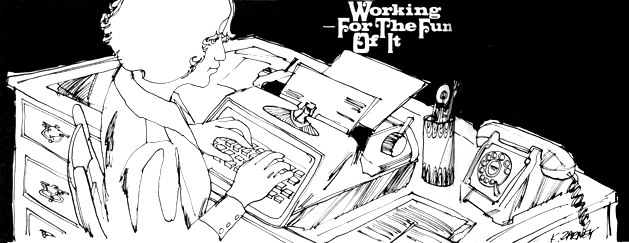

If you type, if you own or can rent a typewriter (preferably electric), if you have a private telephone line and live within or on the edge of a metropolitan area . . . there's a way of beating the 9-to-5 that I highly recommend from personal experience.
I fell into this great arrangement by accident when I happened to be at a party where three or four salesmen (traveling type) were exchanging gripes. It seemed that in the area of secretarial services these men really had problems. Their hours were long and irregular, and when they got into a town in the evening it was usually after the public stenographers had closed for the day. This forced the men to delay their departure until after the stenos opened the next morning.
The salesmen had some pitiful stories to tell about sitting until 11 o'clock waiting for a letter to get typed . . . meanwhile missing an important appointment. One and all, they complained that they didn't have enough correspondence to justify hiring a personal secretary . . . but that all other arrangements were terribly inconvenient.
It seemed to me, listening to these sad tales of woe, that I could solve the problem. So I made the salesmen an offer: If each would supply me with stationery bearing his business letterhead, he could call me whenever he got into town (unless it was some ungodly hour like three in the morning) and dictate his correspondence over the phone. He could then go on about his business without delay while I typed, signed and mailed the letters. I would also mail a carbon of each letter to the salesman and keep a carbon in my files. I would supply typewriter ribbons, carbon paper and other incidentals and send the salesman one bill for my services and the postage actually used on his correspondence.
I was initially disappointed when only one roan took me up on the offer . . . but, when I soon found myself with more work than I could handle, I was grateful that the others had been dubious.
The obvious reason a businessman is afraid to try such an arrangement is because he's terrified that you might be incompetent, that you'll foul up his contacts, mail out price quotations that will bankrupt him, send his letters to the wrong people and do all the other awful things that have probably been done to him at least once in the past. Therefore, you have to suggest-as I did-that he begin by trusting you. with only the very simplest and most innocuous correspondence.
For example, you might start with routine letters just to customers who are "old friends" and with whom your client is on an intimate basis. Then if you goof, he can always call the customers, explain that his secretary is an idiot . . . and no harm will be done.
With this beginning, of course, it's up to you to prove that you are trustworthy and dependable. If-indeed-you are good, you'll quickly become indispensable to your client even if he continues to hold his really important correspondence for another secretary "in the home office". On the other hand-if you're not good-you'll lose the client, he'll tell his friends and you've had it . . . so be sure of your ability before you try.
If you don't happen to fall over a potential client for your home steno service at a party (as I did), there are several ways to find customer number one. I do not recommend that you advertise, however. If my experience is any indication, your biggest problem is going to be keeping your business small enough . . . not making it bigger.
I was only looking for supplemental income when I operated my service, I had just three clients . . . and that was too many. They kept recommending me to others and I kept turning those others down. Even if you want your home business to earn you a full-time living, I still recommend that you let word of mouth do your advertising for you.
There are several ways to locate that first customer. First, find out if there is a motel or hotel near you that specializes in putting up salesmen. There usually is. Explain your service nicely to the owner and ask him to refer the next salesman desperate for a secretary to you. If you're determined to advertise "just a little", get permission to put up a sign (a very small one) in the motel lobby and then take it down the instant you have your first client.
If this doesn't work or if you don't want to try such an approach, just inquire around. Ask the people who run the stores where you shop. Ask the neighbors. Ask your doctor. Ask the barber or the lady who does your hair . . . if somebody does your hair.
Some of these people are sure to know a traveling salesman, or have a friend who knows one . . . and even if the man you finally get in touch with can't use your services, you're in business. Because he will know other salesmen, and lots of them (by the way, be prepared to ignore a lot of very bad salesman jokes).
And once you've found that first potential client . . . how do you convince him to try your service? I just offered mine two free letters and told him he didn't have to pay me for any work that wasn't satisfactory . . . ever. (I think this is important. It's possible that your customer will take advantage of such a deal because there are stinkers in any line of business . . . but if he does, just refuse to work for him any longer. And if your client is honest with you-which is much more likely-he's certain to be impressed by the fairness of the satisfaction-guaranteed-or-no-charge arrangement.)
By the way, before you land that first customer, you'll want to make sure your service complies with the regulations of your town/city/whatever. Chances are, if you operate on a small scale and don't advertise, you won't even need a license or permit . . . but check it out anyway. You don't want to find your client, get started in business . . . and suddenly find yourself faced with a fine because you didn't fill out a form in front.
After working with client number one for a week or so, you'll find that his schedule will-in a rough, approximate sense-give you a schedule too. Let's say he usually calls and dictates for an hour on Monday nights and Thursday afternoons (the two times he's ordinarily in town and within convenient reach of a phone). That means you should always let him know in advance, if you possibly can, when you're going to have to be away from your phone at those times. In return, your customer should warn you if-say-he intends to be in town on Wednesday for a change. If his schedule is totally erratic, of course, then you'll both just have to take your chances.
There's a number of ways to set a fee for your services. You can charge a flat sum per item that you type and mail . . . or establish an hourly rate that includes dictation, mailing, filing, et al . . . or figure a monthly rate based on some hypothetical minimum number of hours or items with a specific charge for anything over those minimums.
If you work at average speed you may even prefer a combination rate of a fixed price per letter mailed, with an added hourly charge for time spent taking dictation, processing mail, etc. In my case-because I type very fast-I find an hourly fee unprofitable and I set a per-item figure. Your rates are up to you. However you decide to charge, though, remember to provide your client with an explanation of the pricing system and an approximate quote of what it will cost him for each letter.
You'll find that it's simpler for you to provide your own materials, as I've already said, and simply include their price in your fee. Remember, the image you want to present is one of total convenience . . . and you'll do that best by requiring nothing from your client except his letterhead stationery items. Be sure, too, that you always have an ample supply of these letterhead supplies on hand. Your customer certainly won't find it very convenient if his correspondence is delayed because you ran out of his stationery and envelopes.
Pay your own phone bill and figure it into your fee. Local calls, of course, will be included in overhead and you should always let your client call you long distance COLLECT so he doesn't have to struggle with coins and operators. Bill him for those conversations on an individual basis.
If you need more help in setting a fee, check into the going rate for public stenography services in your area. The contacts you make with the stenos may even increase your business. In my case, at least, I found that such services were delighted to have someone to whom they could refer customers for an occasional "after hours" job.
As careful as you'll probably be about establishing your rates, be even more careful about keeping records. . . for two reasons.
First, since you'll be self-employed, you'll be able to trim your taxes by deducting all business expenses and a portion of your rent and utility bills from your income. To do so, however, you'll have to have records that support your claimed income and expenses.
Don't try to get by with such makeshift strategy as jotted notes on the backs of envelopes, either. Get yourself an ordinary business ledger and keep detailed records of everything you spend, the hours you put in, the money you earn and anything else that strikes you as pertinent. Invest a dollar in one of those tax preparation guides that you find on newstands and pay attention to the things that they regard as pertinent also (you may be surprised). Make a point of getting a receipt for the stamps you buy at the post office, keeping sales slips for stationery and supplies . . . and always, always put down the date you spend or receive monies, however small. Far better, when tax time comes, to have too many records than too few.
The second-and equally important-reason for keeping records involves your client. If he calls in one heck of a hurry and says, "Here's five addresses. J ust send all of them the same letter I sent Joe Murphy Furniture Manufacturing last Friday," then you need to know where to find your carbon of that letter to Murphy. If your client wants you to read him back a letter he sent somebody three months ago, you'll, have to be able to find that one fast, too.
When I ran my steno service, I made myself two carbons (in addition to the carbon for my client) of everything and used a double filing system for work done. One of my copies went into an alphabetical file in the usual way and the other was kept in a daily file. That way, I had two methods of locating anything I needed.
If a customer said, "I know I sent a letter about rug samples to somebody on the third Friday in July, but I can't remember who," I pulled the daily file for that Friday and hunted through everything I did for the day. If he remembered that the letter went go Acme Rugs but had no idea when it was sent, I thumbed through the Acme Rug file. Such a double system will save you untold time and grief in the long run and will certainly add to the "total convenience` image that you want to project.
The record keeping bit is probably the only really annoying part of this business and it's the part you'll be most tempted to neglect . . . but resist the temptation. Don't be a fanatic about records, but be thorough. And while you're filing those carbons, just think about all the nice features your home steno business offers:
Your overhead is practically nil, you don't have to go anywhere or get sitters or buy a fancy wardrobe (or any wardrobe, for that matter), you can control the size of the business yourself, records are easy to keep, you don't have to be a speed worker, you can always stop in the middle of a letter and cook dinner . . . and the whole operation is very profitable.
When I did this work I was also holding down an additional fulltime job . . . not recommended, but necessary at the time. Nonetheless, working only evenings and weekends, I cleared $40 a week. If you want to go into this fulltime, you should make a more than ample living wage.
As a matter of fact, I still think your biggest problem-once you land your first client-will be fighting off the customers that beat a path to your telephone. But that's a pleasant problem to have . . . good for both the morale and the budget. Other businesses should have it so good.
|
 |
|
|